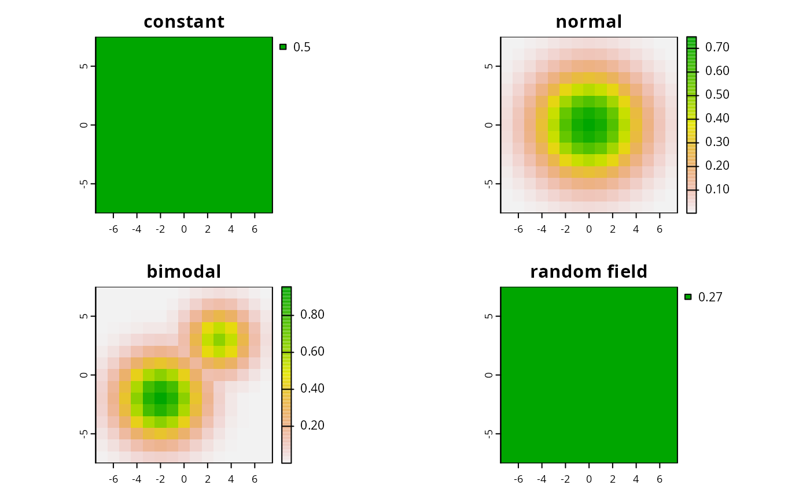

This function simulates species distributions for RAP.
sim.species(x, ...)
# S3 method for SpatRaster
sim.species(x, n = 1, model = "normal", ...)
# S3 method for SpatialPolygons
sim.species(x, res, n = 1, model = "normal", ...)
# S3 method for sf
sim.species(x, res, n = 1, model = "normal", ...)terra::rast() or sf::st_sf() object delineating
the spatial extent for the study area.
not used.
integer number of species. Defaults to 1.
character or numeric for simulating data.
If a character value is supplied, then the following values can
can be used to simulate species distributions with particular
characteristics:
"uniform", "normal", and "bimodal".
If a numeric value is supplied, then this is used to simulate
species distributions using a Gaussian random field, where the
numeric value is treated as the scale parameter.
Defaults to "normal".
numeric resolution to simulate distributions. Only needed
when sf::st_sf() are supplied.
terra::rast() with layers for each species.
# \dontrun{
# make polygons
sim_pus <- sim.pus(225L)
# simulate 1 uniform species distribution using SpatRaster
s1 <- sim.species(blank.raster(sim_pus, 1), n = 1, model = "uniform")
# simulate 1 uniform species distribution based on sf
s2 <- sim.species(sim_pus, res = 1, n = 1, model = "uniform")
# simulate 1 normal species distributions
s3 <- sim.species(sim_pus, res = 1, n = 1, model = "normal")
# simulate 1 bimodal species distribution
s4 <- sim.species(sim_pus, res = 1, n = 1, model = "bimodal")
# simulate 1 species distribution using a random field
s5 <- sim.species(sim_pus, res = 1, n = 1, model = 0.2)
# plot simulations
par(mfrow = c(2,2))
plot(s2, main = "constant")
plot(s3, main = "normal")
plot(s4, main = "bimodal")
plot(s5, main = "random field")

# }